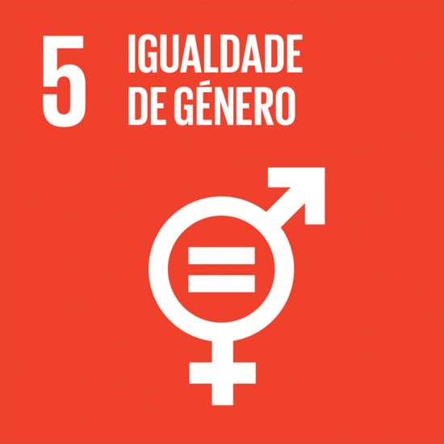
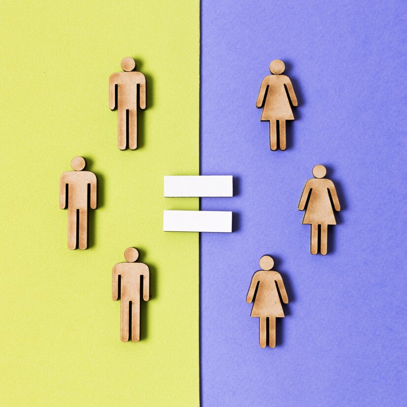
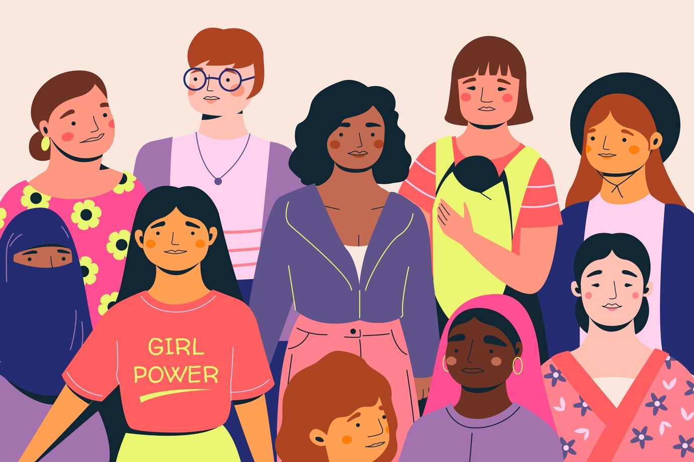

Entenda o que e igualdade de gênero

"Alcançar a igualdade de gênero e empoderar todas as mulheres e meninas"
Igualdade de Gênero
Nos últimos anos, a desigualdade de gênero tem se tornado um assunto recorrente. A luta por um mundo em que homens e mulheres sejam livres para fazer suas escolhas, usufruindo das mesmas responsabilidades, direitos e oportunidades, intensificou-se em meados do século XX, impulsionada, principalmente, pelo movimento feminista. O assunto foi pauta da Rio+20, quando os países membros da Organização das Nações Unidas (ONU) definiram os Objetivos de Desenvolvimento Sustentável a serem alcançados até 2030.

Além de ser um direito humano básico, a igualdade entre os sexos foi considerada um dos pilares para a construção de uma sociedade livre, o que é crucial para acelerarmos o desenvolvimento sustentável. Empoderar mulheres e meninas tem um efeito multiplicador e colabora com o crescimento econômico e o progresso.
 O ODS 5 diz respeito justamente à busca por “alcançar a igualdade de gênero e empoderar todas as mulheres e meninas”.Pensando nas metas do ODS 5, e especialmente naquelas mais ligadas à promoção da alimentação saudável e de uma agricultura sustentável, fica claro que será necessário enfrentar as desigualdades de acesso à terra e renda, acesso à educação e trabalho digno para as mulheres. Ainda mais preocupante é o fato de que, nos últimos anos, o Brasil não consegue ter grandes avanços para alcançar as metas da ODS 5. A meta 5.2, que fala sobre a “eliminação de todas as formas de violência contra todas as mulheres e meninas nas esferas públicas e privadas, incluindo o tráfico e exploração sexual e de outros tipos”, em especial, tem encontrado dificuldades para ser alcançada.
Por que a corda aperta do lado feminino?
É importante lembrar, quando falamos sobre igualdade de gênero, que na maioria das sociedades pelo mundo são as mulheres que precisam de políticas para conseguirem alcançar o mesmo patamar dos homens. De acordo com dados levantados pela ONU Mulheres, pessoas do sexo feminino ganham menos que as do sexo masculino e estão mais sujeitas a ter empregos de baixa qualidade. Há apenas 46 países em que as mulheres ocupam mais de 30% das cadeiras no parlamento nacional, e o Brasil não é um deles.
Problemas da ODS
Assédio no transporte público
De acordo com a pesquisa “Viver em São Paulo: Mulher”, da Rede Nossa São Paulo, 63% das paulistanas declaram já ter sofrido algum caso de assédio na cidade. O transporte público permanece como o local em que as mulheres sentem maior risco de sofrer algum tipo de assédio na opinião de 46% das entrevistadas. A pesquisa também apontou que, na visão das entrevistadas, as principais medidas que precisam ser adotadas são: aumentar as penas para quem comete violência contra a mulher, agilizar o andamento da investigação das denúncias e ampliar os serviços de proteção a mulheres em situação de violência em todas as regiões da cidade.
Violência sexual e doméstica
É um tema que precisa ser cada vez mais combatido. De acordo com o levantamento “Visível e invisível: a vitimização de mulheres no Brasil”, feito pelo Datafolha e encomendado pela ONG Fórum Brasileiro de Segurança Pública, 42,6% das jovens entre 16 e 24 anos afirmam ter sofrido algum tipo de violência ou agressão nos últimos 12 meses. E os dados ficam mais assustadores ao constatar que, considerando todas as mulheres entrevistadas, em 76,4% dos casos a violência partiu de um agressor já conhecido pela vítima. A mesma pesquisa também demonstra que o local em que mais ocorre violência doméstica contra a mulher é na própria casa da vítima, com 42% dos casos. No entanto, 52% das mulheres não tomou providências após sofrer o ato de violência.
As Desigualdade no mercado de trabalho
Também é possível citar a desigualdade entre homens e mulheres no mercado de trabalho como grande obstáculo para igualdade de gênero. Ainda segundo o IBGE, em 2016, 21,5% das mulheres de 25 a 44 anos concluíram o ensino superior. Já em relação aos homens, apenas 15,6% concluíram uma graduação. Todavia, mesmo com maior escolaridade, o salário médio das mulheres era cerca de 23,5% menor que o dos homens. Já de acordo com o IBGE, apenas 10% dos cargos de tomada de decisão, em comitês executivos de grandes empresas. Podemos ver que o século XX proporcionou algumas mudanças para os direitos das mulheres na sociedade, mas ainda temos um longo caminho a percorrer para atingir uma igualdade plena de direitos para todos. Você pode utilizar, como guia, as metas do ODS 5 para promover uma mudança de hábitos.
Desigualdade racial
De acordo com dados do IBGE divulgados em 2019, referentes a 2018, as mulheres ainda encontram um grande abismo salaria em relação aos homens. No entanto, na comparação entre mulheres brancas e negras, a diferença pode chegar a até 71% Já em relação à violência, de acordo com o “Dossiê Mulheres Negras: retrato das condições de vida das mulheres negras no Brasil”, feito pelo IPEA, as mulheres negras ainda são as maiores vítimas de feminicídio no país. Na educação, segundo o mesmo levantamento, apenas 5,2% das mulheres negras no Brasil alcançam o ensino superior, contra 18,2% das mulheres brancas.
Soluções
1.Acabar com todas as formas de discriminação contra mulheres e meninas: Isso envolve promover a igualdade de oportunidades e tratamento justo em todas as áreas da vida, incluindo educação, emprego e participação política.
2.Eliminar todas as formas de violência contra mulheres e meninas: Isso inclui combater o tráfico de pessoas, a exploração sexual e outras formas de violência, tanto no âmbito público quanto privado.
3.Eliminar práticas nocivas: Isso envolve acabar com casamentos prematuros, forçados e infantis, bem como a prática de mutilação genital feminina.
4.Reconhecer e valorizar o trabalho de assistência e doméstico não remunerado: Isso implica em disponibilizar serviços públicos, infraestrutura e políticas de proteção social, além de promover a responsabilidade compartilhada dentro do lar e da família.
5.Garantir a participação plena e efetiva das mulheres e igualdade de oportunidades para a liderança: Isso significa promover a participação das mulheres em todos os níveis de tomada de decisão na política, economia e esfera pública.
Videos informativos:
Explicação dos videos:
1- Neste vídeo é explicado o que é a ODS 5.
2- Neste vídeo Vania e Anna, do canal Pensamentos Transformadores conversam sobre os "tabus" da ODS 5.
Lauriano Oliveira 2023 ©